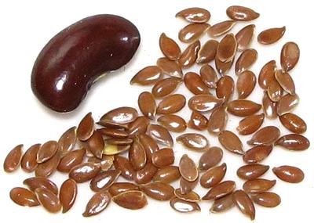

Flax / Flaxseed

[Common Flax; Linum usitatissimum: Family Linaceae of Order
Malpighiales (Violets)]
There are many varieties of flax worldwide, but only Common flax (Linum
usitatissimum) has significant use as either fiber or food. It is native
from the eastern Mediterranean on east to India, and has been planted in many
other regions of Europe, North America, and Africa. It is well known as the
source of fiber for making linen cloth. The oldest spun, dyed and knotted flax
fibers found are from the Republic of Georgia, dated as 30,000 years old.
Flax seeds are about 1/4 inch long, hard and shiny. They are pressed for
Linseed Oil, which is much used in oil based paints, varnish and in the
manufacture of linoleum. When water based polymer paints took over, the
linseed oil industry looked for another market, and they found - yes! you
guessed it! - health food! The main selling point is that the oil is 52%
Omega 3.
Another market has been animal feed, but rapid rancidity has been a major
problem, so a low Omega 3 variety has been developed, trade named "Linola".
Flaxseed Oil:
The edible oil is called Flaxseed Oil, and has
some of the health benefits described below, but not all of them. The
polyunsaturated fats in Flaxseed Oil will go rancid very quickly, particularly
the Omega-3, especially if not refrigerated. It is not used as a cooking oil,
because rancidity sets in almost immediately at even low cooking temperatures.
Ironically, the speed with which the oil goes bad is what makes it so valuable
in paints and finishes, it's quick drying.
Flaxseed Flour:
This is a good gluten free flour that can
be used in various ways, see Cooking below. As a thickener in stews
and soups, it will make them a little mucilaginous, which is why some
"natural living" publications use flax in their formula for "personal
lubricant".
Flaxseed Meal:
This is the residue left after pressing for
oil. It is good protein feed supplement for ruminant animals but not for
fowl as it is severely deficient in lysine. Ruminants can also break down
natural toxins in the meal which other animals can not.
Flaxseed Sprouts:
Flaxseed can be sprouted, and will have a
lightly spicy taste. It still contains a lot of dietary fiber, so
overconsumption without sufficient water can cause constipation.
More on the Violet Family.
Buying:
Flaxseed can be found in several colors: Brown,
Golden, and Light Golden. All are easily available in North America, with
Golden the most popular. It sells for around 2021 US $3.86 per pound (quite
variable). If buying flour, make sure it is from a high turnover source or
vacuum packed due to rancidity problems.
Storing:
In a sealed container away from heat and sunlight,
whole flaxseed can remain usable for more than a year. Because it is high in
polyunsaturated oils, particularly delicate Omega-3, once ground, four will
go rancid within just a few weeks at room temperature (check by smell). It
will last up to 6 months refrigerated or a year frozen. Rancidity can be
delayed for months by immediately vacuum packaging after milling and storing
in the dark. Rancid flour smells bad, tastes bitter, and is reported to cause
digestive upset.
Flaxseed Oil is extremely perishable and must be stored away from heat
and light. It should be bought refrigerated and kept refrigerated. At room
temperature it will be rancid within 6 weeks of pressing.
Cooking:
Fresh Flaxseed Flour is a gluten free product that
is used in baking both breads and cookies. While it contributes oil to the
recipe, it does not seem to have the severe rancidity problem of Flaxseed Oil,
probably because it is bound with other seed materials. It is also often used
to make pancakes. In Ethiopian cooking, Whole Flaxseed is often dry pan toasted
until fragrant and starting to pop. It is very tasty this way, and is usually
then cooled and ground before using in a recipe.
Flaxseed Flour is also used as a vegan egg substitute in some recipes.
1 Tablespoon of flour is mixed with 3 Tablespoons of water and refrigerated
for 15 minutes to set up.
Flaxseed Oil must never be used for cooking, as it goes rancid
immediately when heated to even low cooking temperatures. It can be added
to cold foods, or to recipes after cooking and at serving temperatures.
Health & Nutrition:
Flaxseed is noted
for many health benefits, but is most noted popularly for it's oil being
52% Omega-3 Fatty Acid, or about 1.8 grams per Tablespoon. The
problem here is that the rate at which the ALA in flaxseed oil is can be
converted by the body into the much more useful DHA and EHA is controversial.
Possibly as much as 8% for young men and 21% for young women (due to estrogen
so older women may be more like 8%).
Other benefits are Lignan, which provides plant estrogen and
antioxidant qualities, and dietary Fiber, both soluble and insoluble.
It is also a significant source for several important minerals. In total,
Flaxseed may be beneficial for preventing cancer, cardiovascular disease,
and lung disease, but research is ongoing.
Since Flaxseed is very high in dietary fiber, overconsumption without
enough water can result in constipation.
vi_flaxz 210410 - www.clovegarden.com
©Andrew Grygus - agryg@clovegarden.com - Photos
on this page not otherwise credited © cg1
- Linking to and non-commercial use of this page permitted